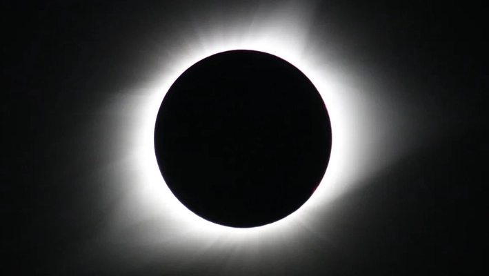

Spring 2024 Conference -- the Eclipse Conference
View the program at NEARA 2024 Spring Conference Program.

Hotel
Make your hotel reservations now at the Burke Mountain Hotel & Conference Center,
2559 Mountain Road, East Burke VT, at 866-966-4820 or online at
Burke Mountain Hotel.
The NEARA Room Block number is 123617.
NOTE: the conference starts SATURDAY afternoon, not Friday.
It continues through MONDAY, not Sunday.
Our room block rates are for three different size units.
King-size beds can convert to two twin beds if desired.
Units have mini kitchen up to full kitchen and dining table.
A 50% deposit is required upon booking.
- Studio suite is $139 -- sleeps 2.
- Deluxe suite is $179 with fireplace -- sleeps up to 4 with pull out sleeper.
- 1 bedroom suite is $233 with fire place and balcony -- sleeps up to 4- pull out sleeper.
Hurry! Rooms are going quickly!
Conference
The registration price includes:
- Conference at The Burke Mountain Hotel
- Saturday Field Trips
- Saturday Buffet Dinner
- Sunday Breakfast
- Sunday Buffet Lunch
- Sunday Night Buffet Banquet
- Coffee Breaks
- Monday Breakfast
- Eclipse Glasses
Saturday Field Trips
- Putney VT, Art & Cindy Camp
- Bolton VT, Mike Luoma
Reading VT, Josh Smart, Canceled due to snow- Franconia NH, Devon Toland
- Woodbury VT, Stephanie Raymond
- Sharon VT, Brad Benjamin
Presentations
Saturday Evening
- Land Acknowledgement, Anne Marie Kittredge
- Local Landscapes and Spiritual Connections to Place, Don Stevens, Chief of the Nulhegan Band of the Coosuk, Abenaki Nation
- Chapter Reports, NEARA Chapter Coordinators
Sunday Morning
- NEARA Annual Membership Meeting, Anne Marie Kittredge, President, and Rob Buchanan, Treasurer
- Committee Reports, NEARA Committees
- Algonkian Oral Traditions of the Sun and Moon, Evan Pritchard
- Evidence of Archaeoastronomy in the Hudson Valley, Glenn Kreisberg
Sunday Afternoon
- How to Align with Statistics, Peter Anick
- An Analysis of the Alignment of Archaeological Sites, Mark J. Carlotto
- A Celtic Early Christian Oratory in New England?, Vance Tiede
- The Fusion of Science and Religion: Solar Alignments, Patrick Shekleton
Sunday Evening
- Retrograde: A Brief History of Avocational Archaeology, NEARA, and the Roots of Archaeoastronomy in CSL Studies, Kitty O’Riordan
Monday Morning
- Stonehenge and Timing Typhon, Vance Tiede
- Workshop: Astro-Archaeology Field Survey Apps, Matthew Bruns
- Workshop: Solar Eclipse Observation & Photography, Vance Tiede
Monday Afternoon
- Live Coverage of the Total Solar Eclipse, NASA
- Totality is from 3:28 - 3:30

Copyright © 2024 New England Antiquities Research Association. All rights reserved.
Some materials are copyright their respective authors.
Note that the views expressed here are the opinions of the respective authors
and are not the official opinion of NEARA.